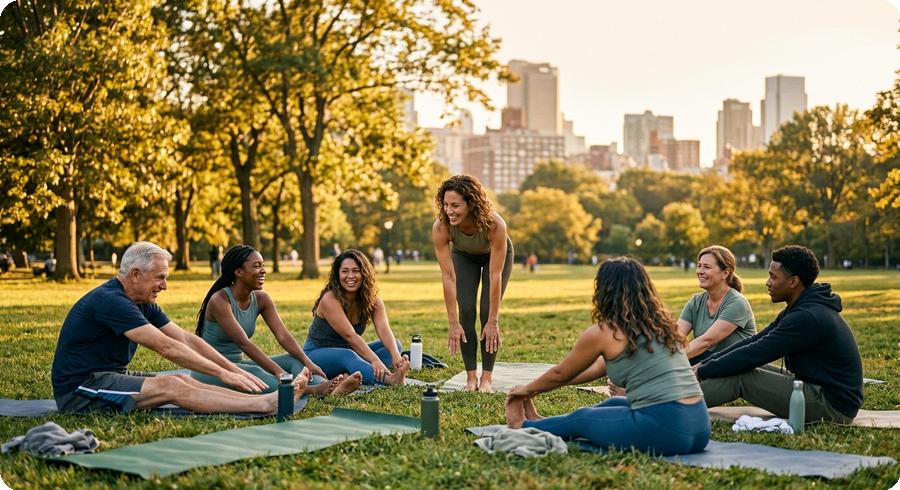
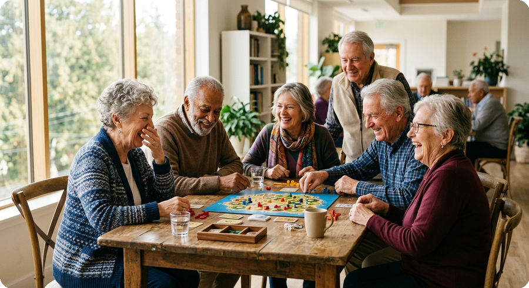

Pour les professionnels Para profesionales For professionals
Un espace pour faire grandir ton groupe Un espacio para hacer crecer tu grupo A space to grow your group
Que tu animes des groupes de soutien, des cours, des ateliers ou des rencontres communautaires — voici des scénarios d'usage courants de Vrytify, selon le type d'activité. Ya sea que facilites grupos de apoyo, cursos, talleres o encuentros comunitarios — aquí tienes escenarios de uso comunes de Vrytify, según el tipo de actividad. Whether you facilitate support groups, classes, workshops, or community meetups — here are common usage scenarios for Vrytify, based on activity type.
Les scénarios ci-dessous sont des exemples illustratifs d'usage, pas des témoignages de clients réels. Los escenarios a continuación son ejemplos ilustrativos de uso, no testimonios de clientes reales. The scenarios below are illustrative usage examples, not testimonials from real clients.
Psychologues et facilitateur·rice·s de groupes de soutienPsicólogos y facilitadores de grupos de apoyoPsychologists and support group facilitators
- Le défiEl retoThe challenge
- Garder le groupe connecté entre les séances, sans dépendre de fils de discussion WhatsApp difficiles à gérer.Mantener el grupo conectado entre sesiones, sin depender de cadenas de WhatsApp difíciles de gestionar.Keeping the group connected between sessions, without relying on hard-to-manage WhatsApp threads.
- Avec VrytifyCon VrytifyWith Vrytify
- Une communauté permanente pour publier les prochaines rencontres et gérer les inscriptions, avec le niveau de confidentialité que ce type d'espace exige.Una comunidad permanente para publicar los próximos encuentros y gestionar inscripciones, con el nivel de privacidad que este tipo de espacio exige.A permanent community to post upcoming meetings and manage sign-ups, with the level of privacy this kind of space requires.
- Ce qui changeLo que cambiaWhat changes
- Une continuité réelle entre les séances, et une visibilité auprès des personnes de la région qui cherchent ce type d'accompagnement.Continuidad real entre sesiones, y visibilidad ante personas de la zona que buscan este tipo de acompañamiento.Real continuity between sessions, and visibility to people nearby looking for this kind of support.

Instructeur·rice·s de conditionnement physique et bien-êtreInstructores de fitness y bienestarFitness and wellness instructors
- Le défiEl retoThe challenge
- Remplir chaque séance sans dépendre uniquement du bouche-à-oreille, et gérer les paiements simplement.Llenar cada sesión sin depender solo del boca a boca, y gestionar los cobros de forma simple.Filling each session without relying solely on word of mouth, and handling payments simply.
- Avec VrytifyCon VrytifyWith Vrytify
- Découverte par proximité réelle, billets QR intégrés, et un panneau de statistiques pour voir ce qui fonctionne.Descubrimiento por cercanía real, boletos QR integrados, y un panel de estadísticas para ver qué funciona.Discovery based on real proximity, built-in QR tickets, and an analytics panel to see what's working.
- Ce qui changeLo que cambiaWhat changes
- Plus de participants réguliers, et moins de temps perdu en logistique.Más participantes constantes, y menos tiempo perdido en logística.More consistent participants, and less time lost on logistics.
Facilitateur·rice·s d'échange linguistique et d'intégrationFacilitadores de intercambio de idiomas e integraciónLanguage exchange and integration facilitators
- Le défiEl retoThe challenge
- Rejoindre les personnes qui cherchent vraiment ce type d'espace — souvent des nouveaux arrivants qui ne savent pas encore où chercher.Llegar a quienes de verdad buscan este tipo de espacio — a menudo personas recién llegadas que aún no saben dónde buscar.Reaching people who are genuinely looking for this kind of space — often newcomers who don't yet know where to look.
- Avec VrytifyCon VrytifyWith Vrytify
- Une application trilingue dès le départ (FR/ES/EN), qui rend l'espace accessible sans barrière de langue dès le premier contact.Una app trilingüe desde el día uno (FR/ES/EN), que hace el espacio accesible sin barrera de idioma desde el primer contacto.A trilingual app from day one (FR/ES/EN), making the space accessible with no language barrier from the very first contact.
- Ce qui changeLo que cambiaWhat changes
- Un groupe qui grandit dans le temps, pas seulement un événement isolé — et une audience réellement intéressée à s'intégrer à la communauté locale.Un grupo que crece con el tiempo, no solo un evento aislado — y una audiencia genuinamente interesada en integrarse a la comunidad local.A group that grows over time, not just a one-off event — and an audience genuinely interested in integrating into the local community.
Coachs en art oratoire et développement personnelCoaches de oratoria y desarrollo personalPublic speaking and personal development coaches
- Le défiEl retoThe challenge
- Bâtir un groupe de pratique récurrent, pas seulement des ateliers isolés sans suite.Construir un grupo de práctica recurrente, no solo talleres sueltos sin continuidad.Building a recurring practice group, not just standalone workshops with no follow-through.
- Avec VrytifyCon VrytifyWith Vrytify
- Une communauté permanente et des outils d'organisation (duplication d'événements, liste d'attente, annonces) pour maintenir des séances régulières sans tout reconstruire à chaque fois.Una comunidad permanente y herramientas de organización (duplicar eventos, lista de espera, anuncios) para sostener sesiones regulares sin reconstruir todo cada vez.A permanent community plus organizer tools (event duplication, waitlist, announcements) to keep regular sessions running without rebuilding everything each time.
- Ce qui changeLo que cambiaWhat changes
- Un espace de pratique qui se renforce séance après séance, appuyé par un historique et un score de confiance.Un espacio de práctica que se fortalece sesión tras sesión, respaldado por un historial y puntaje de confianza.A practice space that strengthens session after session, backed by a history and trust score.
Organisateur·rice·s de rencontres LGBTQ2+Organizadores de encuentros LGBTQ2+LGBTQ2+ meetup organizers
- Le défiEl retoThe challenge
- Créer un espace de rencontre sûr et récurrent, surtout en dehors des grands centres urbains où les options sont limitées.Crear un espacio de encuentro seguro y recurrente, especialmente fuera de los grandes centros urbanos donde las opciones son limitadas.Creating a safe, recurring meeting space, especially outside major urban centers where options are limited.
- Avec VrytifyCon VrytifyWith Vrytify
- Des communautés géolocalisées et permanentes, avec des outils de modération et des normes claires de non-discrimination dès la base de la plateforme.Comunidades geolocalizadas y permanentes, con herramientas de moderación y normas claras de no discriminación desde la base de la plataforma.Geolocated, permanent communities, with moderation tools and clear non-discrimination standards built into the platform's foundation.
- Ce qui changeLo que cambiaWhat changes
- Un point de rencontre stable pour celles et ceux qui cherchent une connexion authentique, près de chez eux.Un punto de encuentro estable para quienes buscan conexión genuina, cerca de casa.A stable meeting point for people seeking genuine connection, close to home.

Organisateur·rice·s d'activités pour personnes aînéesOrganizadores de actividades para personas mayoresActivity organizers for older adults
- Le défiEl retoThe challenge
- Organiser des rencontres régulières qui combattent l'isolement, avec un outil simple à utiliser.Organizar encuentros regulares que combatan el aislamiento, con una herramienta simple de usar.Organizing regular meetups that fight isolation, with a tool that's simple to use.
- Avec VrytifyCon VrytifyWith Vrytify
- Une interface claire, des événements gratuits ou payants selon le besoin, et des communautés qui restent actives entre deux rencontres.Una interfaz clara, eventos gratuitos o pagos según se necesite, y comunidades que permanecen activas entre un encuentro y otro.A clear interface, free or paid events as needed, and communities that stay active between meetups.
- Ce qui changeLo que cambiaWhat changes
- Une participation soutenue et un vrai réseau social qui se construit dans le temps, pas seulement un événement ponctuel.Participación sostenida y una red social real que se construye con el tiempo, no solo un evento puntual.Sustained participation and a real social network built over time, not just a one-off event.